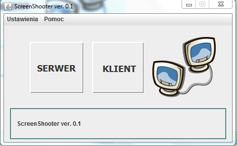
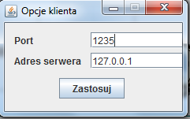

Okno główne programu.
Serwer - umożliwia uruchomienie aplikacji serwerowej, która będzie przesyłać podgląd ekranu z aktualnego komputera do klienta.
Klient - umożliwia uruchomienie aplikacji klienckiej, która będzie odbierać podgląd ekranowy z serwera oraz potrafi sterować myszką oraz klawiaturą na serwerze.
-------------------------------------------------------------------------------------------------------------------------------------------------------------------------------------

Okno opcji serwera.
Ustawiane wartości określają kolejno port, na którym będzie działał serwer, stopień kompresji przesyłanego obrazu oraz czas przesyłania obrazu.
-------------------------------------------------------------------------------------------------------------------------------------------------------------------------------------

Okno opcji klienta.
Ustawione wartości określają kolejno port, poprzez który klient będzie łączył się z serwerem oraz adres serwera.
-------------------------------------------------------------------------------------------------------------------------------------------------------------------------------------
Created with the Personal Edition of HelpNDoc: Free help authoring environment